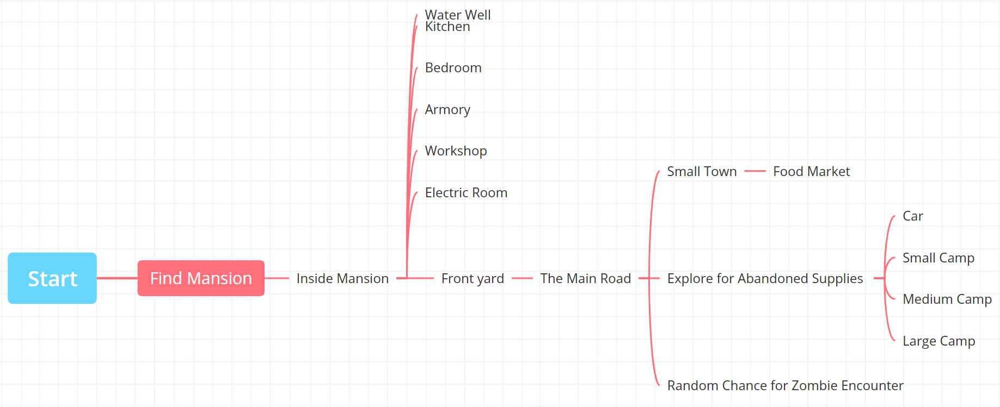

"Living with Unknown Risks" is a Text based adventure survival game where you wake up in the woods and stumble upon a mansion in a world that has fallen into disrepair. The Mansion has a working fresh water supply via a water well so the only concern you have left is food and repair supplies. luckly this Mansion is just off the main road which allows for easy exploration to collect materials by finding abandoned towns and camps of varying sizes
this was a solo project done in a week and was my first exploration into the Twine Game Engine. my grand plan was to have a semi open/semi infinite word or as close as I could get to it while limited to a text based game. when starting the development of it I had to learn twine while also planning the world layout as shown in this node map bellow
to enhance the survival aspect of it there was a food and water mechanic where every time you make a move both your water and food amounts would go down and you would have to get water and food to keep yourself alive. water could be gathered via the water well in the mansion and food would have to be gathered by going out exploring the nearby towns and camps